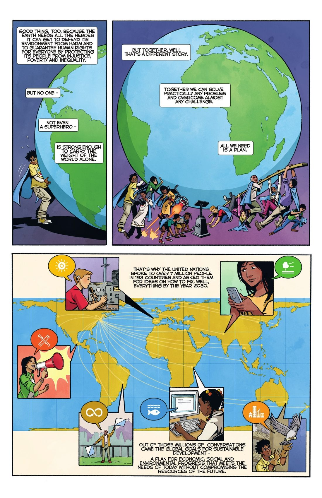

You're the judge. For each part: read the comic on the left → get the check right → write 1–2 sentences. Done = 4 green checks + 4 answers, then turn in at the bottom.
- UN = the United Nations, 193 member countries
- Global Goals = 17 goals the UN set in 2015, like ending poverty by 2030
- Bloc = a group of countries that act together
- WTO = World Trade Organization, which sets trade rules
- Member state = a country that belongs to a group
- Human rights = rights every person has

Click the page to make it bigger.
Turn in your work
Your work saves on this device, so you can come back later. Your teacher sees it after you turn it in.
Comics: Comics Uniting Nations: Heroes for Change © 2015 Project Everyone, PCI Media Impact and Reading With Pictures, CC BY-NC-ND 4.0 (pages shown whole and unchanged). The Story of Foreign Trade and Exchange (2008), Federal Reserve Bank of New York (cropped). Rendez-vous at Council of Europe © European Union, 2026, art and story by Kokopello; reproduction authorised provided the source is acknowledged.